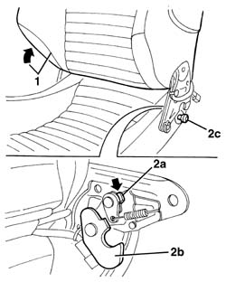
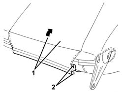
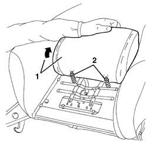
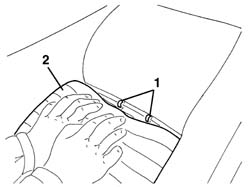
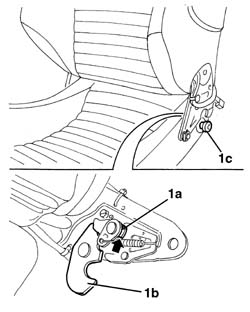

7045A19 BACKREST - CENTRE SECTION - front seat (one, left or right - R.R .
- Path
- Procedures > 70 FITTINGS > 7045 FRONT SEATS > 7045A front seat assembly > 7045A19 BACKREST - CENTRE SECTION - front seat (one, left or right - R.R .
- Kind
- repair procedure (removal / refitting; the operation number is the code)
- Applies to
- engines: 3.2 V6; all production periods
- Interactive page
- https://sloeber94.github.io/elrnDB-a156/en/#/3238860
Applies to: engines: 3.2 V6; all production periods; only with equipment: GTA
 Removing
Removing
 Refitting
Refitting7045A10 l/h or r/h front seat (one) - r+r
7045A44 seat interior guard - r r
1. Using an electric power supply, lower the backrest until it is in the end of travel position.
2. Using a screwdriver, press the tooth (2a) on both sides of the seat and release the hooks (2b) releasing them from the pins (2c).

Applies to: engines: 3.2 V6; all production periods; only with equipment: GTA
1. Move the backrest forward.
2. Disconnect the two bottom ends of the squab cover, hooked onto each other. Start from one end.

Applies to: engines: 3.2 V6; all production periods; only with equipment: GTA
1. Raise the backrest front cushion slightly.
2. Release the retaining springs.

Applies to: engines: 3.2 V6; all production periods; only with equipment: GTA
1. Press the top part of the front cushion and cut the retaining rings using clippers.
2. Remove the front cushion after having disconnect the heater pad electrical connection.

Applies to: engines: 3.2 V6; all production periods; only with equipment: GTA
Refitting
RemovingCheck that the front cushion is not damaged.
Place the front cushion in position and connect the heater pad electrical connection.
Secure the upper cushion retainers using the rings.
Attach the springs and lower the cushion.
Connect the lower two ends of the backrest cover, attaching them to one another. Start from one end.
1. Lift up the tooth (1a) on both sides of the seat, then press the hooks (1b) and reattach them to the pins (1c).

Applies to: engines: 3.2 V6; all production periods; only with equipment: GTA
Topics linked from this page (3)
- 7045A10 l/h or r/h front seat (one) - r+r
- 7045a43 seat exterior guard - r r
- 7045A44 seat interior guard - r r